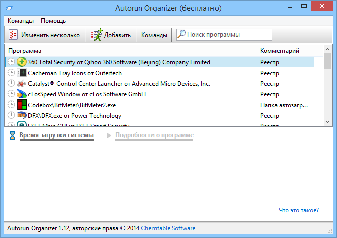

Autorun Organizer - продвинутый менеджер автозагрузки для Windows, с его помощью можно
наглядно оценить время загрузки системы, отключить ненужные программы, а также выстроить
очередь для оптимизации процесса загрузки программ при старте системы. Отключенные записи
проверяются программой на предмет их повторного появления и автоматически отключаются при
повторном включении.

Возможности Autorun Organizer:
- Автоматический контроль отключенных программ
- Наглядная диаграмма времени загрузки Windows
- Уведомления о появлении новых записей в автозагрузке Windows
- Функция быстрого поиска
- Автоматическое обновление до новых версий утилиты
- Пакетная работа с записями
- Отключение/включение программ автозагрузки
Операционные системы:
- Microsoft Windows 10 / 8 / 7 / Vista / XP
(32- и 64-разрядные)